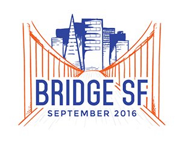

Phase 1: 2016 BRIDGE SF Disrupting Mobility Hackathon

The BRIDGE SF 2016 UC Berkeley Hackathon explores how Shared Automated Electric and Connected (SECA) vehicles will impact the way people and goods move within a city. Participants will be asked to define and solve these challenges:
- How will SECA vehicles impact residents, commuters and businesses?
- Can SECA vehicles better serve the underserved?
- Will SECA vehicles lead to greater safety?
- What about adapting to new or unpredictable changes including emergencies?
- How can multiple shared services work together?
- How can multi-modal integration be achieved between various public and private transportation modes?
Evaluation Criteria
Each team will present their concepts to a panel of expert judges at the end of the Hackathon starting at 2pm Sunday, September 4th. The judges will evaluate your project based on its value-add to the end users including research academics and institutions; developers and planning departments; and to the general public especially in regards to:
- Improved Travel Times
- Accessibility (Seniors, Disabled)
- Economic Benefits (Jobs, Productivity)
- Scalability, Open Source Design and User Interface
- Environmental Impact.
The winner of the Hackathon will be awarded a Microsoft BizSpark membership.
They will also receive a a 3 month internship with the Urban-Rural Systems project at Future Cities Laboratory in Singapore. (Some terms and conditions apply.)
Winners will also receive tickets to BRIDGE SF's Thought-Leadership Panels on Thursday, September 8th @ the David Brower Center in Berkeley. They may also present at the International Association of Transportation Regulators (IATR) conference Friday, September 23rd in San Francisco.